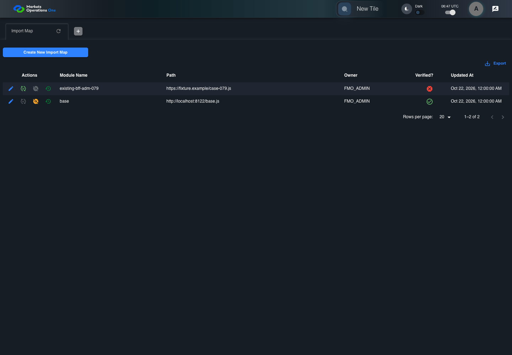
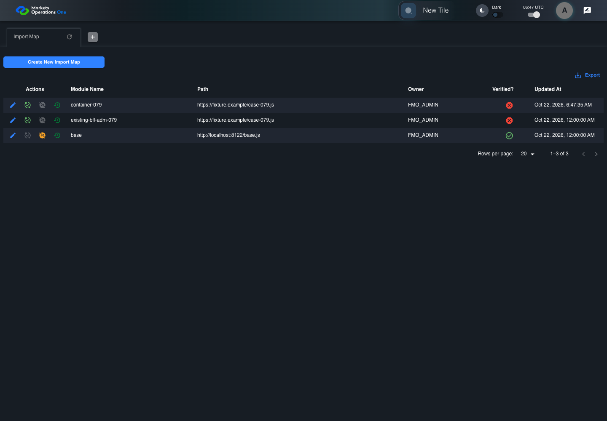

BFF-ADM-079 current BFF administration through actual UI
FAIL · application/run-072/bff-adm-079-current-bff-administration-through-actual-ui-261142f40f56-attempt-1 · ACTUAL_APPLICATION_LOCAL_SERVICES
Actual current React and exact-current BFF admin controllers/services/JPA with actual migration DDL in disposable PostgreSQL. Controlled OUD/EMS2 identities and local Spring bootstrap. Fixture SQL seeds/mutates isolated records; service errors are actual database errors. Undefined agreed messages remain unresolved acceptance.
2026-10-22T06:47:31.223Z to 2026-10-22T06:47:41.384Z
Assertions and result · Artifact manifest · Exact run inputs and source hashes
Result SHA-256:4c930b32159cd0e69431a46996dd1ef589df2dc9e0fbb815cbef5e3307bd9c87Retained failure details
[
{
"message": "Error: \u001b[2mexpect(\u001b[22m\u001b[31mlocator\u001b[39m\u001b[2m).\u001b[22mtoBeVisible\u001b[2m(\u001b[22m\u001b[2m)\u001b[22m failed\n\nLocator: locator('.MuiAlert-root').filter({ has: locator('.MuiAlert-message') })\nExpected: visible\nTimeout: 5000ms\nError: element(s) not found\n\nCall log:\n\u001b[2m - Expect \"toBeVisible\" locator('.MuiAlert-root').filter({ has: locator('.MuiAlert-message') }) with timeout 5000ms\u001b[22m\n\u001b[2m - waiting for locator('.MuiAlert-root').filter({ has: locator('.MuiAlert-message') })\u001b[22m\n",
"stack": "Error: \u001b[2mexpect(\u001b[22m\u001b[31mlocator\u001b[39m\u001b[2m).\u001b[22mtoBeVisible\u001b[2m(\u001b[22m\u001b[2m)\u001b[22m failed\n\nLocator: locator('.MuiAlert-root').filter({ has: locator('.MuiAlert-message') })\nExpected: visible\nTimeout: 5000ms\nError: element(s) not found\n\nCall log:\n\u001b[2m - Expect \"toBeVisible\" locator('.MuiAlert-root').filter({ has: locator('.MuiAlert-message') }) with timeout 5000ms\u001b[22m\n\u001b[2m - waiting for locator('.MuiAlert-root').filter({ has: locator('.MuiAlert-message') })\u001b[22m\n\n at BffAdminApp.errorAlert (/Users/lushevol/code/github/ratan-release-impact/workbench/e2e/support/bff-admin-app.ts:166:169)\n at /Users/lushevol/code/github/ratan-release-impact/workbench/e2e/audit-specs/bff-admin.spec.ts:49:166\n at AuditCapture.step (/Users/lushevol/code/github/ratan-release-impact/workbench/e2e/support/audit-fixture.ts:94:21)\n at /Users/lushevol/code/github/ratan-release-impact/workbench/e2e/audit-specs/bff-admin.spec.ts:18:27",
"location": {
"file": "/Users/lushevol/code/github/ratan-release-impact/workbench/e2e/support/bff-admin-app.ts",
"column": 169,
"line": 166
},
"snippet": "\u001b[90m at \u001b[39m../support/bff-admin-app.ts:166\n\n 164 | }\n 165 | async assertUnchanged():Promise<void>{expect(await this.snapshot()).toEqual(this.expectedPersisted);expect(await this.gridSnapshot()).toEqual(this.initialGrid);}\n> 166 | async errorAlert(exact?:string):Promise<void>{const alert=this.page.locator('.MuiAlert-root').filter({has:this.page.locator('.MuiAlert-message')});await expect(alert).toBeVisible();await expect(alert).toHaveClass(/MuiAlert-standardError|MuiAlert-filledError|MuiAlert-outlinedError/);if(exact)await expect(alert.locator('.MuiAlert-message')).toHaveText(exact);else {const mutation=[...this.requests].reverse().find(request=>['create','update','audit'].includes(request.operation));expect(mutation?.status).toBeGreaterThanOrEqual(400);await expect(alert.locator('.MuiAlert-message')).not.toHaveText('');await this.audit.record('undefined-message-contract',{canonical:'Agreed message is unavailable. Only real error response and visible nonempty error are characterized.',actual:await alert.innerText()});}}\n | ^\n 167 | async cell(name:string,id:string){return this.ui.reveal(adminFields[name]??name,id);}\n 168 | }\n 169 |"
}
]Machine observations
- actual-identity-projection.json
4add5b2652bfee095e4b166a1bad563e27e211d67edd418f54bd1fc4896617ef - baseline-inputs.json
1e5905fd525ecd86838adb94ef34816b1d7a9c7247e7cd3678516143405a9928 - bff-boundary.json
71e4722644d15356fce1e1a4e4b5da22b09aeecb6b4907e258c4f46c1ef9731c - committed-ui-submission-comparisons.json
5ad56b675b07130528875fb2c20a6141c48d8493800977ea3b567b16de021894 - creation-clock.json
7115a25e3ae2fcb00355c9c625bbaf51565932bb7bcfe7e72cf98b58f90ec7cc - fixture-step-4.json
35068064ab196a335364ee7d8c968090a3cf96ab8c547e238fbc16b245a020f3 - fixture-step-5.json
bd2f1e62808df1685be5ee12b6ea7f2095460c59908042a4bc7b8065ebfaea3e - initial-persisted-records.json
0525538c7793b76948a7468aa348ff8c5f7bbc0e321aa84cfaf37ee61357becb - persisted-after-submit.json
14c934ff8fa311621a3fd5e5b9e5c9475976920867c7b58476b54bc5a644c910 - rejection-or-policy-observation.json
58ea775521e1a906adc1ebb604320b7f79d9bb4a07fa0de88893acf3e40cc281 - ui-origin-bff-requests.json
c798255c8574053fe324786ae15075c43328e266858ea0acba088c46db7e1531
Screenshot capture: CAPTURED. Named frames: 13.
Step screenshot bindings: INCOMPLETE. 12/14 canonical steps have execution screenshots.
Bindings measure structural coverage only. They do not establish screenshot content quality or relevance.
Screenshot content review: NOT_REVIEWED. Recorded context: 0/13 frames. Identical image bytes: 6 repeated frames. Recorded context does not establish human visual review.
Step 13 has no screenshot from an executed step. Step 14 has no screenshot from an executed step.
Canonical step timeline
Given Admin A uses subject "admin-a" with role "FMO_ADMIN" in an isolated authenticated browser
Execution: PASSED.1. step-01 Visible state after step 1: Given Admin A uses subject "admin-a" with role "FMO_ADMIN" in an isolated authenticated browser
2026-10-22T06:47:33.456Z · 1440×1000
Step: /Users/lushevol/code/github/ratan-release-impact/workbench/tasks/ui-test-coverage-20261022/test-cases.md:18047
SHA-256:f7b6ae10360d9985321eaaab9d4f4f85b39b983e77dc07fde968056b438dd0aeAnd the controlled Import Map fixture records the initial grid rows and persisted values
Execution: PASSED.
2. step-02 Visible state after step 2: And the controlled Import Map fixture records the initial grid rows and persisted values
2026-10-22T06:47:33.620Z · 1440×1000
Step: /Users/lushevol/code/github/ratan-release-impact/workbench/tasks/ui-test-coverage-20261022/test-cases.md:18048
SHA-256:f7b6ae10360d9985321eaaab9d4f4f85b39b983e77dc07fde968056b438dd0aeImage bytes match frame 1. An unchanged image can be valid for consecutive assertions. This match does not establish correct step content.
And the controlled creation clock returns 1700000000000 milliseconds
Execution: PASSED.
3. step-03 Visible state after step 3: And the controlled creation clock returns 1700000000000 milliseconds
2026-10-22T06:47:33.685Z · 1440×1000
Step: /Users/lushevol/code/github/ratan-release-impact/workbench/tasks/ui-test-coverage-20261022/test-cases.md:18049
SHA-256:f7b6ae10360d9985321eaaab9d4f4f85b39b983e77dc07fde968056b438dd0aeImage bytes match frame 2. An unchanged image can be valid for consecutive assertions. This match does not establish correct step content.
And the baseline fixture data defines "Module Name" as "container-079"
Execution: PASSED.
4. step-04 Visible state after step 4: And the baseline fixture data defines "Module Name" as "container-079"
2026-10-22T06:47:33.750Z · 1440×1000
Step: /Users/lushevol/code/github/ratan-release-impact/workbench/tasks/ui-test-coverage-20261022/test-cases.md:18050
SHA-256:662e95ec68c979cfb7d35946f750fd37a0f319b9b37d1246467b28cc81143ae6And the baseline fixture data defines "Path" as "https://fixture.example/case-079.js"
Execution: PASSED.
5. step-05 Visible state after step 5: And the baseline fixture data defines "Path" as "https://fixture.example/case-079.js"
2026-10-22T06:47:33.833Z · 1440×1000
Step: /Users/lushevol/code/github/ratan-release-impact/workbench/tasks/ui-test-coverage-20261022/test-cases.md:18051
SHA-256:662e95ec68c979cfb7d35946f750fd37a0f319b9b37d1246467b28cc81143ae6Image bytes match frame 4. An unchanged image can be valid for consecutive assertions. This match does not establish correct step content.
When Admin A clicks the button labeled "Create New Import Map" on the Import Map administration page
Execution: PASSED.6. step-06 Visible state after step 6: When Admin A clicks the button labeled "Create New Import Map" on the Import Map administration page
2026-10-22T06:47:34.065Z · 1440×1000
Step: /Users/lushevol/code/github/ratan-release-impact/workbench/tasks/ui-test-coverage-20261022/test-cases.md:18052
SHA-256:d49d6e7fd8962a6047d6a0c963038ffa9185e932fa06925ab4d4a4a47b75cf3eThen the dialog titled "new ID: 1700000000000" is visible on the Import Map administration page
Execution: PASSED.
7. step-07 Visible state after step 7: Then the dialog titled "new ID: 1700000000000" is visible on the Import Map administration page
2026-10-22T06:47:34.164Z · 1440×1000
Step: /Users/lushevol/code/github/ratan-release-impact/workbench/tasks/ui-test-coverage-20261022/test-cases.md:18053
SHA-256:6588678eb85f0d62ef096c0a96b4d93997aa34a19ff50219cea09784f4e8a5b1When the controlled database event removes Import Map 201 before submission
Execution: PASSED.8. step-08 Visible state after step 8: When the controlled database event removes Import Map 201 before submission
2026-10-22T06:47:34.402Z · 1440×1000
Step: /Users/lushevol/code/github/ratan-release-impact/workbench/tasks/ui-test-coverage-20261022/test-cases.md:18054
SHA-256:6588678eb85f0d62ef096c0a96b4d93997aa34a19ff50219cea09784f4e8a5b1Image bytes match frame 7. An unchanged image can be valid for consecutive assertions. This match does not establish correct step content.
And Admin A fills the textbox labeled "Module Name" with "container-079" in dialog "new ID: 1700000000000"
Execution: PASSED.9. step-09 Visible state after step 9: And Admin A fills the textbox labeled "Module Name" with "container-079" in dialog "new ID: 1700000000000"
2026-10-22T06:47:34.901Z · 1440×1000
Step: /Users/lushevol/code/github/ratan-release-impact/workbench/tasks/ui-test-coverage-20261022/test-cases.md:18055
SHA-256:c4c27683d3d95e552ee6eeed934581ac905676beab162e73b5efcc7f0571ed97And Admin A fills the textbox labeled "Path" with "https://fixture.example/case-079.js" in dialog "new ID: 1700000000000"
Execution: PASSED.10. step-10 Visible state after step 10: And Admin A fills the textbox labeled "Path" with "https://fixture.example/case-079.js" in dialog "new ID: 1700000000000"
2026-10-22T06:47:35.381Z · 1440×1000
Step: /Users/lushevol/code/github/ratan-release-impact/workbench/tasks/ui-test-coverage-20261022/test-cases.md:18056
SHA-256:3085411f198a925f2352e4cc24d7300df5daa843827191102a37754d5d07b77eAnd Admin A clicks the button labeled "Create" in dialog "new ID: 1700000000000"
Execution: PASSED.
11. step-11 Visible state after step 11: And Admin A clicks the button labeled "Create" in dialog "new ID: 1700000000000"
2026-10-22T06:47:35.636Z · 1440×1000
Step: /Users/lushevol/code/github/ratan-release-impact/workbench/tasks/ui-test-coverage-20261022/test-cases.md:18057
SHA-256:0c98c8adae7cb0023a348e03dda78d596aabd65709842154e0763cb9937d7133Then the alert with severity "error" in the portal snackbar displays the captured rejection response message
Execution: FAILED.
12. step-12-failure Visible state when step 12 failed. Later steps did not execute.
2026-10-22T06:47:40.698Z · 1440×1000
Step: /Users/lushevol/code/github/ratan-release-impact/workbench/tasks/ui-test-coverage-20261022/test-cases.md:18058
SHA-256:0c98c8adae7cb0023a348e03dda78d596aabd65709842154e0763cb9937d7133Image bytes match frame 11. An unchanged image can be valid for consecutive assertions. This match does not establish correct step content.
And the dialog titled "new ID: 1700000000000" remains visible on the Import Map administration page
Execution: NOT_EXECUTED.No screenshot is recorded for this step. No executed state is claimed.
And the Import Map data grid with column "Record Id" row identifiers and loaded field values equal the initial grid snapshot on the Import Map administration page
Execution: NOT_EXECUTED.No screenshot is recorded for this step. No executed state is claimed.
Additional named frames

The visible state when the test failed.
2026-10-22T06:47:40.796Z · 1440×1000Step: Test source: /Users/lushevol/code/github/ratan-release-impact/workbench/e2e/audit-specs/bff-admin.spec.ts:11
SHA-256:
0c98c8adae7cb0023a348e03dda78d596aabd65709842154e0763cb9937d7133Image bytes match frame 12. An unchanged image can be valid for consecutive assertions. This match does not establish correct step content.
Screenshots establish visible state only. Assertions and traces support functional claims.